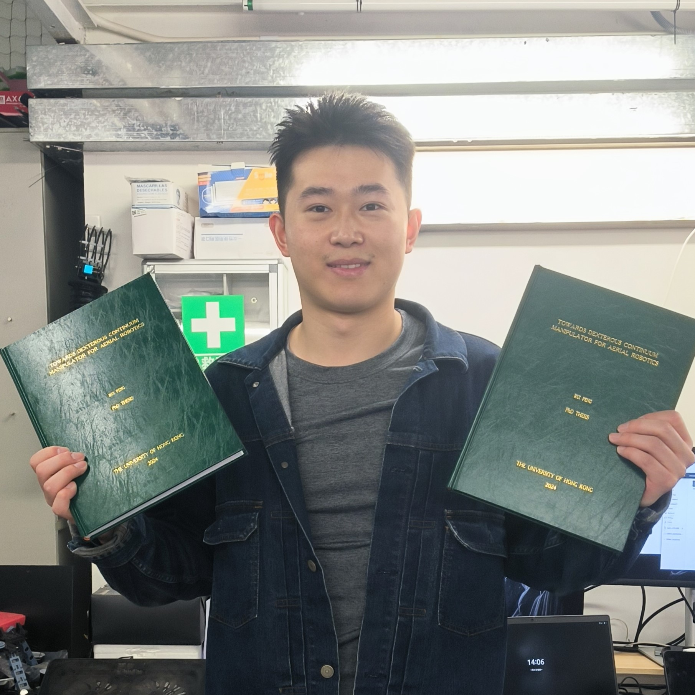

| 
| CV |
Email |
G Scholar |
| Github |
ORCID |
|
Rui Peng is a PhD candidate in robotics at The Department of Mechanical Engineering, The University of Hong Kong.
My current supervisor is Dr. Peng Lu, who is leading the Adaptive Robotic Controls Lab (ArcLab).
I am doing research on aerial continuum manipulation, and origami robotic manipulators, with mechanical design, modeling, control, and motion planning.
About my leisure life, I am a basketball player and self-weight fitness trainer, for which I upload my training vlogs in bilibili.
Also, I love music, movies, and photography.
|